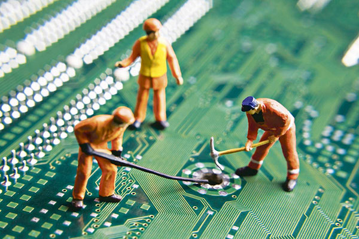

Hardware
El hardware son todos los componentes físicos que constituyen a la computadora, estos se ensamblan para hacer que la computadora funcione y existen componentes primordiales que deben estar presentes para que la computadora temga un rendimiento adecuado.

Hardaware indispensable
Existen piezas claves que deben estar presentes en el ensamblado de las computadoras para poder hacer que funcionen, sin estas piezas la computadora simplemente no serviría.
Dentro de esta categoría se encuentran:
- El procesador, que es considerado el cerebro de la computadora, ya que este es el encargado de realizar las tareas y actividades que el usuario pide.
- Memoria RAM, donde se guardan las instrucciones que ordena el usuario.
- Motherboard; es la placa donde se montan todos los componentes que componen a la computadora.
- Memoria ROM; memoria que se caracteriza por ser únicamente de lectura y no de escritura.
- Discos duros, que son donde se almacena toda la información que contiene la computadora; éstas pueden ser internas o externas.
- Gabinete; el gabinete es el que proteje a todos los componentes de cualquier daño que se le pueda presentar a los demás componentes.

Hardaware complementario
Son todos aquellos elementos de los que se puede prescindir para el funcionamiento del equipo, por ejemplo:
- Bocinas
- Mouse
- Teclado
- Tarjeta de red
Venta de Hardaware
Existen distintas formas de poder adquirir el Hardware, desde las más baratas hasta las m6aacute;s caras.
Hardaware OEM
Significa Original Equipment Manufacturer, que significa fabricante de equipo original. Se trata de dispositivos que para su venta, no entrega disco de instalación, manuales ni equipo; la ventaja es que puedenllegar a ser hasta 50% más econónomicos.
Hardaware BOX
Los dispositivos vienen totalmente empaquetados con sus manuales, licencias, soportes y garantía.
Hardaware retail
Significa hardware al por menor. Se trata de la venta de dispositivos en mostrador.
Hardaware refurbished
Es aquel que ha sido reparado o renovado, y que se da en un precio hasta 80% menor al original.
